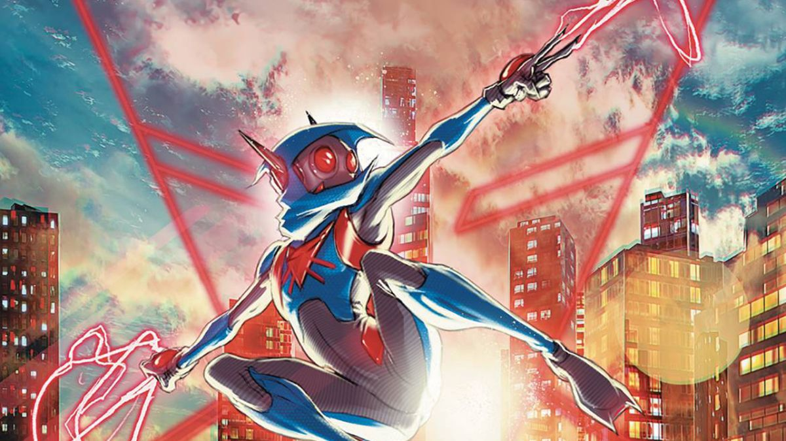

You’re fifteen years old. You’re suddenly granted incredible powers. Cool, right? There’s only one problem: you can only use your powers for ten minutes at a time. What do you do when you have to save the world but you only have ten minutes to do it? This is the problem faced by Oliver Leif, a teenager who has just moved to a new town, and a new school, and is having a hard enough time navigating classes and his crush before the inter-dimensional monsters started showing up.
